Aqui você verá as informações mais complexo dos personagens, dos dubladores entre outros. No Começo do filmes até o terceiro filme são mostrado 8 personagens principais, po sendo o centro o protagonista mesmo e os 5 furiosos que ajudam o po nas suas lutas para salvar a Vale da Paz com seu mestre Shifu treinando sempre e o Mestre Oogway entregando seu conhecimento antes de partir para um mundo desconhecido onde apenas o terceiro filme mostra onde ele está.
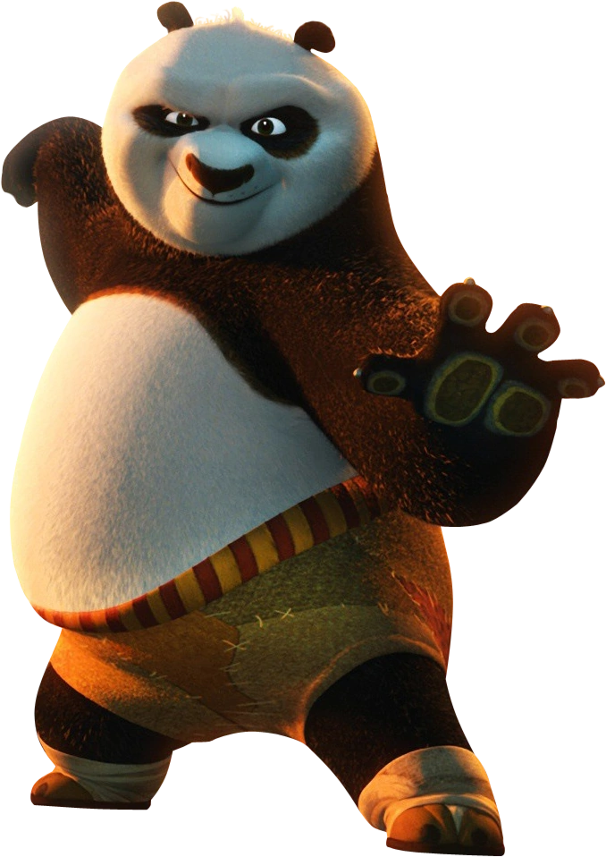
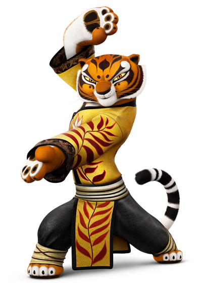
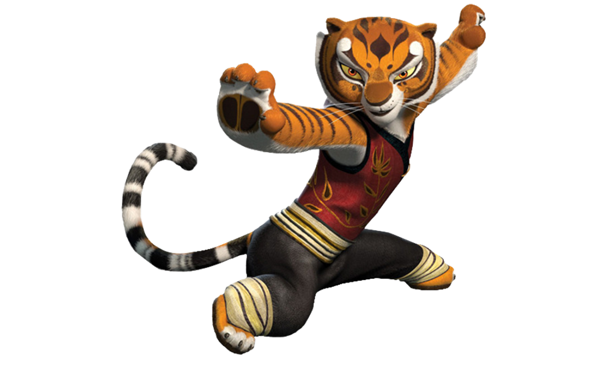
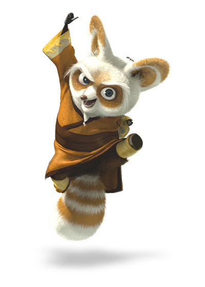
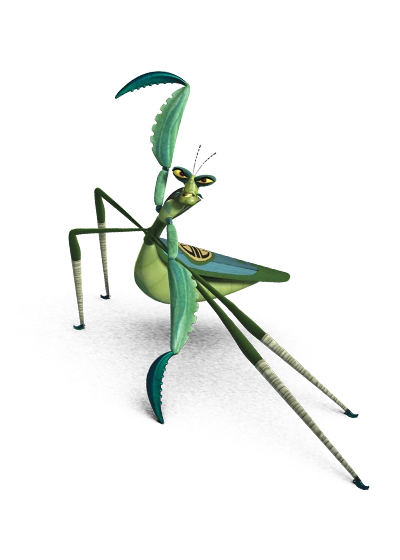
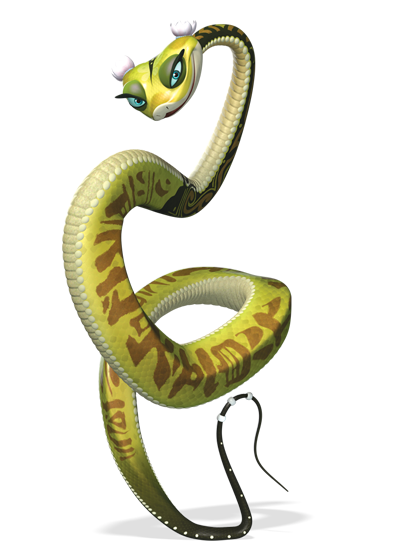
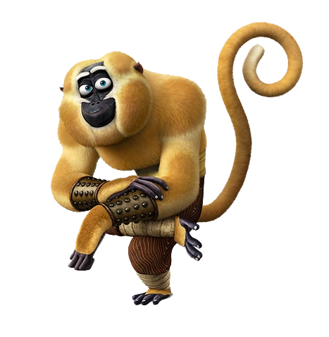
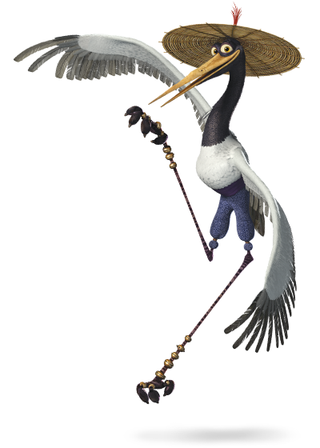
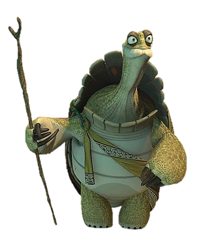
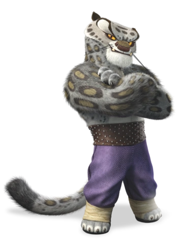
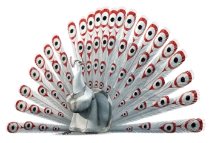
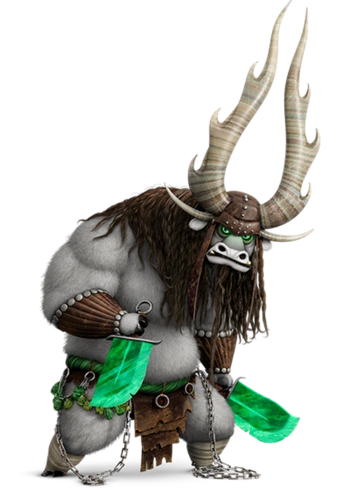